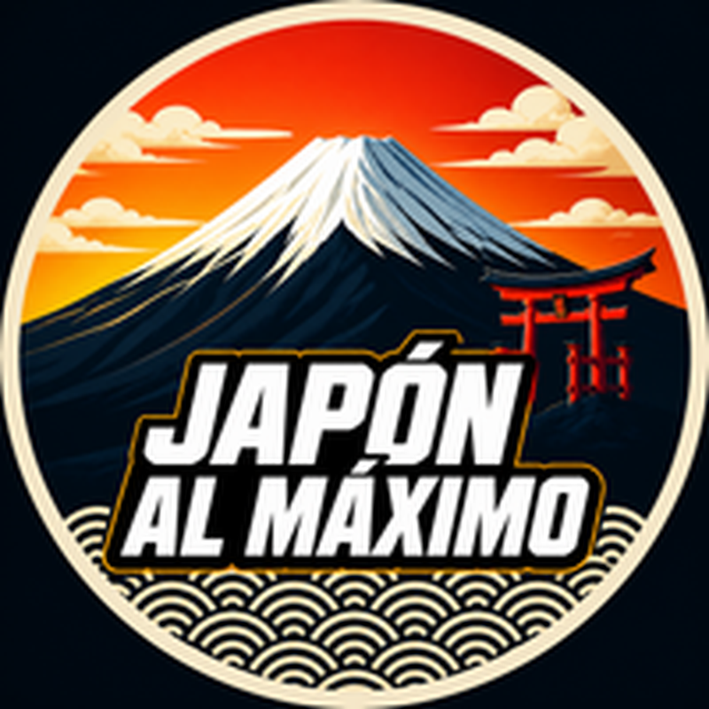

JAPÓN AL MÁXIMO
Disfruta Japón sin sorpresas
▶ Mira el canal en YouTubeModales, comida, transporte y frases útiles 💬 Pregúntame por WhatsAppPróximamente · tus dudas sobre tu viaje a JapónPARA TU VIAJE
📶 eSIM para JapónInternet desde que aterrizas · próximamente 🎟️ Tours y experiencias en TokioReserva con antelación en Viator · enlace de afiliadoAlgunos enlaces de esta página son de afiliados: si reservas a través de ellos, apoyas el canal sin pagar nada extra.